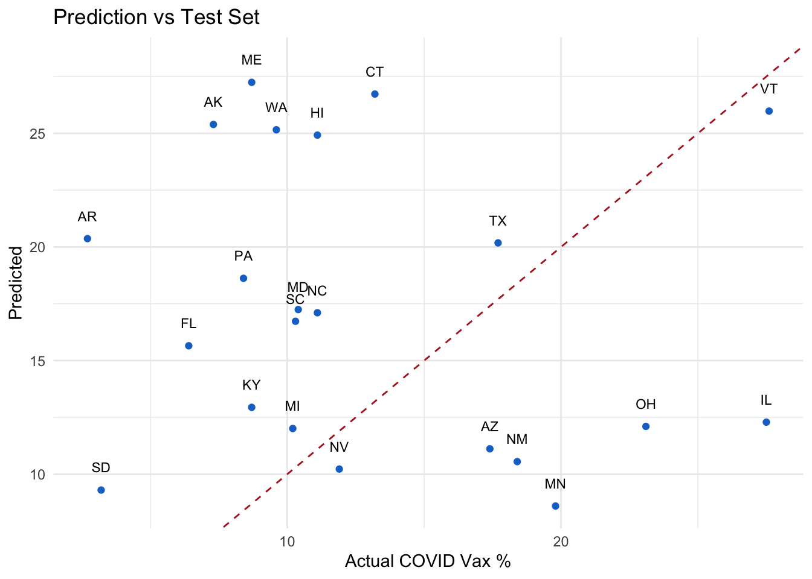

Next, we’ll load the data, using the code provided by the Tidy Tuesday team via github.
tuesdata <- tidytuesdayR::tt_load('2025-04-08')
---- Compiling #TidyTuesday Information for 2025-04-08 ----
--- There is 1 file available ---
── Downloading files ───────────────────────────────────────────────────────────
1 of 1: "care_state.csv"
care_state <- tuesdata$care_state
Let’s check out the data a little bit. I read the article, so I know this is about emergenct room waiting times.
There’s 8 variables and 32 observations. There’s a character state variable, a character condition variable, character measure_id variable, character measure name variable, double score vairable which means integer with more precision, character footnote variable, and a start date and end date variable.
State seems pretty stragithforward. Condition seems to be type of care the patient was in the hospital for, one of which is emergency department. Measure ID seems to be a shorthand code for measure name, which describes what the measure means. Some of these are weird and I’m not sure what they mean. Score is a list of numbers, I’m guessing it’s what the number is for the specified meaure, and I see some NAs to deal with. Footnote is only a few unique answers that are numebrs and NA, I don’t know what it means. Start date and end date a pretty straightforwards.
Most variables look like they have okay distirbutions, except for footnote and score, where there’s a lot of NAs.
[1] "Percentage of healthcare personnel who are up to date with COVID-19 vaccinations"
[2] "Healthcare workers given influenza vaccination Higher percentages are better"
[3] "Average (median) time patients spent in the emergency department before leaving from the visit A lower number of minutes is better"
[4] "Average time patients spent in the emergency department before being sent home A lower number of minutes is better (high)"
[5] "Average time patients spent in the emergency department before being sent home A lower number of minutes is better (low)"
[6] "Average time patients spent in the emergency department before being sent home A lower number of minutes is better (moderate)"
[7] "Average (median) time patients spent in the emergency department before leaving from the visit- Psychiatric/Mental Health Patients. A lower number of minutes is better"
[8] "Average time patients spent in the emergency department before leaving from the visit - Psychiatric/Mental Health Patients. A lower number of minutes is better (high)"
[9] "Average time patients spent in the emergency department before leaving from the visit - Psychiatric/Mental Health Patients. A lower number of minutes is better (low)"
[10] "Average time patients spent in the emergency department before leaving from the visit - Psychiatric/Mental Health Patients. A lower number of minutes is better (moderate)"
[11] "Average time patients spent in the emergency department before leaving from the visit - Psychiatric/Mental Health Patients. A lower number of minutes is better (very high)"
[12] "Percentage of patients who left the emergency department before being seen Lower percentages are better"
[13] "Percentage of patients who came to the emergency department with stroke symptoms who received brain scan results within 45 minutes of arrival Higher percentages are better"
[14] "Percentage of patients receiving appropriate recommendation for follow-up screening colonoscopy Higher percentages are better"
[15] "Percentage of patients who had cataract surgery and had improvement in visual function within 90 days following the surgery Higher percentages are better"
[16] "Safe Use of Opioids - Concurrent Prescribing"
[17] "Percentage of patients who received appropriate care for severe sepsis and septic shock. Higher percentages are better"
[18] "Septic Shock 3-Hour Bundle"
[19] "Septic Shock 6-Hour Bundle"
[20] "Severe Sepsis 3-Hour Bundle"
[21] "Severe Sepsis 6-Hour Bundle"
ggplot(data = care_state, aes(x =fct_explicit_na(condition, na_level ="Missing"))) +geom_bar(fill ="steelblue") +theme_cowplot() +labs(x ="Condition", y ="Count", title ="Responses for Condition") +theme(axis.text.x =element_text(angle =45, hjust =1, size =8))
Warning: `fct_explicit_na()` was deprecated in forcats 1.0.0.
ℹ Please use `fct_na_value_to_level()` instead.
#this tells me that the same metrics were collected for each hospital I thinkggplot(data = care_state, aes(x =fct_explicit_na(measure_id, na_level ="Missing"))) +geom_bar(fill ="steelblue") +theme_cowplot() +labs(x ="measure_id", y ="Count", title ="Responses for measure_id") +theme(axis.text.x =element_text(angle =45, hjust =1, size =8)) +ylim(0,60)
ggplot(data = care_state, aes(x = score)) +geom_histogram(binwidth =1, fill ="steelblue", color ="steelblue", na.rm =FALSE) +# Include NAstheme_cowplot() +labs(x ="score", y ="Count", title ="Responses for score") +theme(axis.text.x =element_text(angle =45, hjust =1, size =8))
Warning: Removed 155 rows containing non-finite outside the scale range
(`stat_bin()`).
#this looks crazy but it shows there's a lot of NAs and I'll have to do something about thatggplot(data = care_state, aes(x =fct_explicit_na(as.factor(score), na_level ="Missing"))) +geom_bar(fill ="steelblue", color ="black") +theme_cowplot() +labs(x ="Score", y ="Count", title ="Responses of Scores (Including Missing)") +theme(axis.text.x =element_text(angle =45, hjust =1, size =8))
#22 data points per state roughlyggplot(data = care_state, aes(x =fct_explicit_na(state, na_level ="Missing"))) +geom_bar(fill ="steelblue") +theme_cowplot() +labs(x ="state", y ="Count", title ="Responses for state") +theme(axis.text.x =element_text(angle =45, hjust =1, size =8)) +ylim(0,25)
#footnote and score have a lot of missing answers care_state %>%summarise(across(everything(), ~sum(is.na(.)))) %>%pivot_longer(everything(), names_to ="variable", values_to ="missing_count") %>%ggplot(aes(x =reorder(variable, -missing_count), y = missing_count)) +geom_col(fill ="steelblue") +labs(title ="Missing Values per Variable",x ="Variable",y ="Number of Missing Values") +theme_minimal() +theme(axis.text.x =element_text(angle =45, hjust =1))
Here’s summaries of our variables. Might need these for future reference, maybe not.
summary(care_state)
state condition measure_id measure_name
Length:1232 Length:1232 Length:1232 Length:1232
Class :character Class :character Class :character Class :character
Mode :character Mode :character Mode :character Mode :character
score footnote start_date end_date
Min. : 1 Length:1232 Min. :2023-01-01 Min. :2023-12-31
1st Qu.: 70 Class :character 1st Qu.:2023-04-01 1st Qu.:2024-03-31
Median : 93 Mode :character Median :2023-04-01 Median :2024-03-31
Mean :134 Mean :2023-04-05 Mean :2024-03-14
3rd Qu.:193 3rd Qu.:2023-04-01 3rd Qu.:2024-03-31
Max. :730 Max. :2024-01-01 Max. :2024-03-31
NA's :155
Data cleaning and processing
First, I’ll take out US territories, because I think I’m only going to look at states.
# List of non-state abbreviationsnon_states <-c("AS", "DC", "GU", "MP", "PR", "VI")#remove non-statescare_state <- care_state |>filter(!(state %in% non_states))
I’m going to remove observations with missing score, becuase it’s not providing useful information. I’m not going to remove observations with a missing footnote, because from my understanding, that just means there’s no extra info to note, and I don’t think that’s a problem.
care_state <- care_state %>%filter(!is.na(score))
I will add US Census Region onto the data for future use.
Lastly, I will shift this data to a wide format rather than long to make it easier to work with, and rename the variables to shorter names.
care_wide <- care_state |>select(state, region, measure_name, score) |>pivot_wider(names_from = measure_name,values_from = score,values_fn = mean )#There's duplicates for average time spent in ER Dept, so I chose to average them togethercare_state |> dplyr::group_by(state, measure_name) |> dplyr::summarize(n =n()) |> dplyr::filter(n >1)
`summarise()` has grouped output by 'state'. You can override using the
`.groups` argument.
# A tibble: 44 × 3
# Groups: state [44]
state measure_name n
<chr> <chr> <int>
1 AL Average time patients spent in the emergency department before b… 2
2 AR Average time patients spent in the emergency department before b… 2
3 AZ Average time patients spent in the emergency department before b… 2
4 CA Average time patients spent in the emergency department before b… 2
5 CO Average time patients spent in the emergency department before b… 2
6 CT Average time patients spent in the emergency department before b… 2
7 DE Average time patients spent in the emergency department before b… 2
8 FL Average time patients spent in the emergency department before b… 2
9 GA Average time patients spent in the emergency department before b… 2
10 HI Average time patients spent in the emergency department before b… 2
# ℹ 34 more rows
#rename to make them easier to work withcare_wide <- care_wide |>rename(covid_vax_pct =`Percentage of healthcare personnel who are up to date with COVID-19 vaccinations`,flu_vax_pct =`Healthcare workers given influenza vaccination Higher percentages are better`,ed_visit_median_time =`Average (median) time patients spent in the emergency department before leaving from the visit A lower number of minutes is better`,ed_home_high =`Average time patients spent in the emergency department before being sent home A lower number of minutes is better (high)`,ed_home_low =`Average time patients spent in the emergency department before being sent home A lower number of minutes is better (low)`,ed_home_moderate =`Average time patients spent in the emergency department before being sent home A lower number of minutes is better (moderate)`,ed_psych_median =`Average (median) time patients spent in the emergency department before leaving from the visit- Psychiatric/Mental Health Patients. A lower number of minutes is better`,ed_psych_high =`Average time patients spent in the emergency department before leaving from the visit - Psychiatric/Mental Health Patients. A lower number of minutes is better (high)`,ed_psych_low =`Average time patients spent in the emergency department before leaving from the visit - Psychiatric/Mental Health Patients. A lower number of minutes is better (low)`,ed_psych_moderate =`Average time patients spent in the emergency department before leaving from the visit - Psychiatric/Mental Health Patients. A lower number of minutes is better (moderate)`,ed_left_pct =`Percentage of patients who left the emergency department before being seen Lower percentages are better`,stroke_scan_pct =`Percentage of patients who came to the emergency department with stroke symptoms who received brain scan results within 45 minutes of arrival Higher percentages are better`,colonoscopy_followup_pct =`Percentage of patients receiving appropriate recommendation for follow-up screening colonoscopy Higher percentages are better`,opioid_safety =`Safe Use of Opioids - Concurrent Prescribing`,sepsis_care_pct =`Percentage of patients who received appropriate care for severe sepsis and septic shock. Higher percentages are better`,sepsis_3hr =`Septic Shock 3-Hour Bundle`,sepsis_6hr =`Septic Shock 6-Hour Bundle`,severe_sepsis_3hr =`Severe Sepsis 3-Hour Bundle`,severe_sepsis_6hr =`Severe Sepsis 6-Hour Bundle`,ed_psych_very_high =`Average time patients spent in the emergency department before leaving from the visit - Psychiatric/Mental Health Patients. A lower number of minutes is better (very high)`,cataract_success_pct =`Percentage of patients who had cataract surgery and had improvement in visual function within 90 days following the surgery Higher percentages are better` )
Research Question
We’re going to examine the percent of hospital workers who meet requirements for COVID vaccination. We have data for all 50 states, but will split into training and testing to evaluate how well we can prdict by region.
I will be using the census designated regions, as follows:
\(\textbf{Model 1: simple linear regression with cross validation}\)
Our first model will be a simple linear model. We will split the data as 60% training and 40% testing. Region and flu vaccine adherence will be used as predictors. Based on the plot, this doesn’t look like a great model. The RMSE is 10.79306166.
#set seenset.seed(1234)#split 60% training 40% testing, stratified by regionsplit <-initial_split(care_wide, prop =0.6, strata = region)train_data <-training(split)test_data <-testing(split)#use region and flu vax % as predictors for covid vax %vax_rec <-recipe(covid_vax_pct ~ region + flu_vax_pct, data = train_data) %>%step_dummy(all_nominal_predictors()) # convert region to dummies#make linear modellm_spec <-linear_reg() %>%set_engine("lm")#workflowvax_wf <-workflow() %>%add_model(lm_spec) %>%add_recipe(vax_rec)#fit modelvax_fit <-fit(vax_wf, data = train_data)#make predictionspreds <-predict(vax_fit, test_data) %>%bind_cols(test_data)#evaluate preformance preds %>%metrics(truth = covid_vax_pct, estimate = .pred)
# A tibble: 3 × 3
.metric .estimator .estimate
<chr> <chr> <dbl>
1 rmse standard 10.8
2 rsq standard 0.0231
3 mae standard 9.34
ggplot(preds, aes(x = covid_vax_pct, y = .pred, label = state)) +geom_point(color="dodgerblue3") +geom_text(nudge_y =1, size =3) +geom_abline(slope =1, intercept =0, linetype ="dashed", color="firebrick") +labs(x ="Actual COVID Vax %", y ="Predicted", title ="Prediction vs Test Set") +theme_minimal() #gridlines help

\(\textbf{Model 2: Lasso Regression}\)
Our second model will be a LASSO model. We will split the data as 60% training and 40% testing, same as before. Region and flu vaccine adherence will be used as predictors just like earlier. The RMSE is 8.676324 for the best model.
Noteably, the highest penalty model has the lowest RMSE. This uses a lot of shrinkage, and is at risk for underfitting, so this may not be the best model even if it has a low RMSE.
# Set seed for reproducibilityset.seed(1234)# 1. Define the LASSO model (mixture = 1 for LASSO)lasso_mod <-linear_reg(penalty =tune(), mixture =1) %>%set_engine("glmnet") %>%set_mode("regression")# 2. Recipe with preprocessinglasso_rec <-recipe(covid_vax_pct ~ region + flu_vax_pct, data = train_data) %>%step_novel(all_nominal_predictors()) %>%# handle unseen categoriesstep_dummy(all_nominal_predictors()) %>%# one-hot encode regionstep_zv(all_predictors()) %>%# remove zero variance columnsstep_normalize(all_predictors()) # normalize predictors# 3. Workflowlasso_wf <-workflow() %>%add_model(lasso_mod) %>%add_recipe(lasso_rec)# 4. 5-fold cross-validationset.seed(1234)cv_folds <-vfold_cv(train_data, v =5)# 5. Grid of penalty valuespenalty_grid <-grid_regular(penalty(), levels =50)# 6. Tune the modellasso_tune_res <-tune_grid( lasso_wf,resamples = cv_folds,grid = penalty_grid,metrics =metric_set(rmse))# 7. Review resultslasso_results <-collect_metrics(lasso_tune_res)# 8. Plot tuning resultsggplot(lasso_results, aes(x = penalty, y = mean)) +geom_point() +geom_line() +scale_x_log10() +labs(title ="LASSO Tuning Results",x ="Penalty (log scale)",y ="RMSE")
# 9. Select best modelbest_lasso <-select_best(lasso_tune_res, metric ="rmse")# 10. Finalize workflow with best penaltyfinal_lasso_wf <-finalize_workflow(lasso_wf, best_lasso)# 11. Fit final model on training datafinal_lasso_fit <- final_lasso_wf %>%fit(data = train_data)# 12. Predict on test setlasso_preds <-predict(final_lasso_fit, new_data = test_data) %>%bind_cols(test_data)# 13. Compute RMSE on test setlasso_rmse_test <-rmse(lasso_preds, truth = covid_vax_pct, estimate = .pred)# Print RMSElasso_rmse_test
# A tibble: 1 × 3
.metric .estimator .estimate
<chr> <chr> <dbl>
1 rmse standard 8.68
ggplot(lasso_preds, aes(x = covid_vax_pct, y = .pred, label = state)) +geom_point(color ="dodgerblue3") +geom_text(nudge_y =1, size =3) +geom_abline(slope =1, intercept =0, linetype ="dashed", color ="firebrick") +labs(x ="Actual COVID Vax %", y ="Predicted", title ="LASSO: Prediction vs Test Set") +theme_minimal() # gridlines help
\(\textbf{Model 3: Random Forest}\)
Our third model will be a random forest model. We will split the data as 60% training and 40% testing, same as before. Region and flu vaccine adherence will be used as predictors just like earlier. The RMSE is 9.469237 for the testing data model.
The plot shows the min_n parameter, which tells us the numebr of data points required to split a node. The more data points needed, the higher the RMSE. This may indicate underfitting.
# Set seed for reproducibilityset.seed(1234)# 1. Define the Random Forest model with tunable hyperparameters and variable importancerf_mod <-rand_forest(mtry =tune(), min_n =tune(), trees =300) %>%set_engine("ranger", seed =1234, importance ="permutation") %>%set_mode("regression")# 2. Create the reciperf_rec <-recipe(covid_vax_pct ~ region + flu_vax_pct, data = train_data) %>%step_novel(all_nominal_predictors()) %>%# Handle unseen levelsstep_dummy(all_nominal_predictors()) # Convert region to dummies# 3. Create the workflowrf_wf <-workflow() %>%add_model(rf_mod) %>%add_recipe(rf_rec)# 4. Set up 5-fold cross-validationcv_folds <-vfold_cv(train_data, v =5)# 5. Create a grid of tuning parametersrf_grid <-grid_regular(mtry(range =c(1, 5)),min_n(range =c(1, 20)),levels =5)# 6. Tune the model using CVrf_tune_res <-tune_grid( rf_wf,resamples = cv_folds,grid = rf_grid,metrics =metric_set(rmse),control =control_grid(save_pred =TRUE))# 7. Collect tuning results and filter for RMSErf_results <-collect_metrics(rf_tune_res) %>%filter(.metric =="rmse")# 8. Plot RMSE across tuning gridggplot(rf_results, aes(x = min_n, y = mean, color =factor(mtry))) +geom_line() +geom_point() +labs(title ="Random Forest Tuning Results",x ="min_n",y ="RMSE",color ="mtry" ) +theme_minimal()
# 9. Select best hyperparameters based on lowest RMSEbest_rf <-select_best(rf_tune_res, metric ="rmse")# 10. Finalize the workflow using best hyperparametersfinal_rf <-finalize_workflow(rf_wf, best_rf)# 11. Fit the final model on full training datafinal_rf_fit <- final_rf %>%fit(data = train_data)# 12. View variable importance plotfinal_rf_fit %>%extract_fit_parsnip() %>%vip()
# 13. Evaluate on the test settest_preds <-predict(final_rf_fit, test_data) %>%bind_cols(test_data)# 14. Compute test RMSEtest_rmse <-rmse(test_preds, truth = covid_vax_pct, estimate = .pred)test_rmse
# A tibble: 1 × 3
.metric .estimator .estimate
<chr> <chr> <dbl>
1 rmse standard 9.47
# 15. Plot predicted vs. actualggplot(test_preds, aes(x = covid_vax_pct, y = .pred, label = state)) +geom_point(color ="dodgerblue3") +geom_text(nudge_y =1, size =3) +geom_abline(slope =1, intercept =0, linetype ="dashed", color ="firebrick") +labs(x ="Actual COVID Vax %",y ="Predicted COVID Vax %",title ="Random Forest: Prediction vs Test Set" ) +theme_minimal()
Which model is best?
I think the random forest model is best, despite having the intermdiate RMSE (9.469237). The lasso regression model gives reason to be concerned about underfitting, and that the lower RMSE may be due to overshrinkage. The random forest model can handle more complex relationships than the simple linear model. Below is a plot of the observed vs predicted values for the random forest model, which doesn’t look great, but it’s not worrse than the others.
# Plot prediction vs actual for the Random Forest modelggplot(test_preds, aes(x = covid_vax_pct, y = .pred, label = state)) +geom_point(color ="dodgerblue3") +geom_text(nudge_y =1, size =3) +geom_abline(slope =1, intercept =0, linetype ="dashed", color ="firebrick") +labs(x ="Actual COVID Vax %",y ="Predicted COVID Vax %",title ="Random Forest: Prediction vs Test Set" ) +theme_minimal()
Discussion
Linear regression, LASSO regression, and random forest models were created and cross-validated to study the regional differences of COVID vaccine complicance among hosptial workers. RMSE was used as a form of evialuation, but underfitting and complexity were additionally considered. The LASSO regression model had the lowest RMSE, but was not chosen due to underfitting, consequently, the random forest mdoel was selected due to lower concerns for underfitting and ability to handle complex relationships.
After adjusting for geographical regions of the United States, the most significant predictor was found to be flu shot adherence among hospital workers rather than geographical region, as shown below.